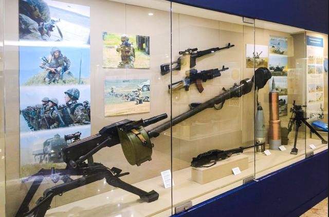
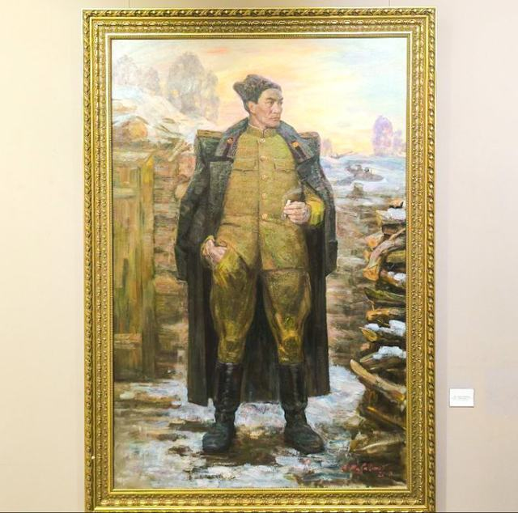
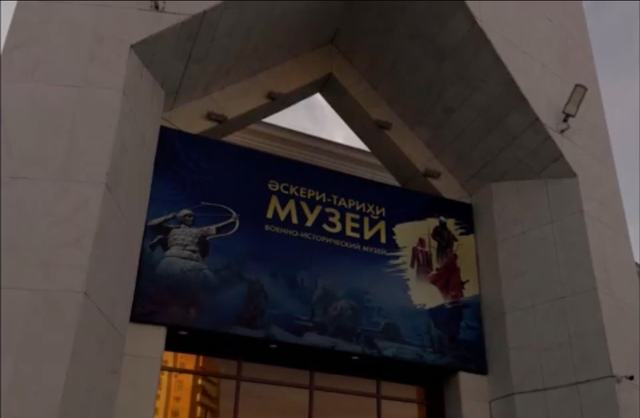

Halls and Exhibitions
Ten stops from the atrium to the open-air pavilion. Choose a hall to open its page.
Explore the museum by hall
The structure follows the museum descriptions published by Visit Astana and e-Museum.

1. Atrium “Mangilik El”
The heart of the building: a bronze monument that links ancient warriors with today’s armed forces.

2. Antiquity – XIX Century
Armour, bows, helmets and a horse burial from the military world of the steppe.

3. Military History of the XX Century
The Alash period, the Great Patriotic War and the war in Afghanistan.

4. Armed Forces of Kazakhstan
From the creation of the armed forces in 1992 to the modern land, air-defence and naval forces.

5. History of Tank Troops
Armoured warfare, a relief battle map and an interactive presentation.

6. Weapons of the XX–XXI Centuries
Machine guns, anti-tank weapons, aviation equipment and models of military technology.

7. Military Formations and Units
How divisions and brigades were raised in Kazakhstan, and how their stories are studied.

8. Visual Arts
Paintings, graphics and sculpture on the theme of defending the homeland.

9. Temporary Exhibitions
A changing programme of special collections in a dedicated hall.

10. Outdoor Military Equipment
Missiles, boats and armoured vehicles displayed in the open air.
| No. | Exhibition | Main theme | Page |
|---|---|---|---|
| 1 | Atrium “Mangilik El” | Historical continuity and military heritage | Open hall |
| 2 | Antiquity – XIX Century | Ancient weapons, archaeology and military traditions | Open hall |
| 3 | Military History of the XX Century | Alash period, World War II and Afghanistan | Open hall |
| 4 | Armed Forces of Kazakhstan | Formation and development of independent Kazakhstan’s Armed Forces | Open hall |
| 5 | History of Tank Troops | Armoured forces and tank warfare | Open hall |
| 6 | Weapons of the XX–XXI Centuries | Small arms, military technology and weapon models | Open hall |
| 7 | Military Formations and Units | Military organisations and service formations | Open hall |
| 8 | Visual Arts | Painting, graphics and sculpture | Open hall |
| 9 | Temporary Exhibitions | Changing exhibitions and special collections | Open hall |
| 10 | Outdoor Military Equipment | Large-scale military technology | Open area |
A suggested visitor route
The halls are arranged chronologically, so the simplest plan is to follow them in order.
- Start at the entrance and atrium
Meet the “Mangilik El” monument under the dome. - Explore ancient military history
Armour, bows and a horse burial from the steppe. - Continue to the twentieth century
Alash, the Great Patriotic War and Afghanistan. - Learn about the Armed Forces of independent Kazakhstan
Land, air-defence and naval forces. - Visit the tank and weapons exhibitions
A relief battle map, machine guns and a field gun. - Finish with visual arts, temporary exhibitions and the outdoor equipment area
Then step outside to the missiles, boats and armoured vehicles.